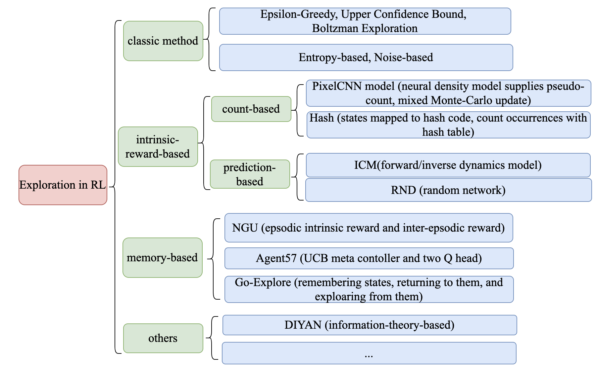

Exploration Mechanisms in Reinforcement Learning¶
This article mainly refers to this review on exploration strategies in reinforcement learning blog14 。
Problem Definition and Research Motivation¶
Reinforcement learning is to guide the update of the strategy through the reward signal given by the environment, and strive to obtain the maximum cumulative discount reward. But in many real-world environments the rewards are sparse or even non-existent. In this case, how to guide the agent to efficiently explore the state and action space, and then find the optimal strategy to complete the task?
If the agent becomes greedy after a finite number of steps of training, i.e. chooses only the actions it currently thinks are optimal in a certain state, it may never learn the optimal policy, as it may well have converged to a suboptimal policy , will never reach a state of truly meaningful rewards. This is the so-called exploration and exploitation dilemma. In layman’s terms, the so-called exploration: refers to doing things you have never done before in order to expect higher returns; the so-called utilization: refers to doing what you currently know can produce the greatest returns.
Referring to Go-Explore 9, exploration mainly includes two difficulties:
The rewards given by the environment are sparse. The agent needs to make a specific sequence of actions to get a non-zero reward. If only random exploration is used in each step, it is likely that a non-zero reward will not be encountered in the entire learning process. For example, in Montezuma’s Revenge, the agent needs to perform a long sequence of actions to obtain a key or enter a new room, and only then will there be a reward.
The rewards given by the environment are misleading. For example, in the Pitfall game, not only are the rewards very sparse, but many actions of the agent will get a negative reward. Before the agent learns how to obtain a positive reward, it may stop in place due to the existence of these negative rewards resulting in a lack of exploration.
In the above cases, an efficient exploration mechanism is crucial for the agent to complete the task.
Direction¶
The exploration mechanism in reinforcement learning can be roughly divided into the following research directions:
Classic Exploration Mechanism
Exploration based on Intrinsic Reward
Count-based intrinsic rewards
Intrinsic reward based on prediction error
Intrinsic rewards based on information theory
Memory-Based Exploration
Episodic Memory
Direct Exploration
Other Exploration Mechanisms
The representative algorithms of each research direction and their key points are shown in the following figure:
{kind=link}
Classic Exploration Mechanism¶
In traditional multi-armed bandit problems, commonly used classical exploration mechanisms include:
Epsilon-Greedy：At a certain moment, all actions have a choice probability greater than 0. The agent performs random actions (exploration) with a small probability\(\epsilon\), and performs the action with the largest Q value with a large probability\(1-\epsilon\)(using).
Upper Confidence Bounds: The agent greedily chooses the action that maximizes the upper bound on the confidence \(\hat{Q}_{t}(a)+\hat{U}_{t}(a)\), where \(\hat{Q}_{t}(a)\)is in \(t\) The average reward associated with the action:math:a, \(\hat{U}_{t}(a)\) is a reward associated with taking the action \(a\)function that is inversely proportional to the number of times.
Boltzmann Exploration: The agent samples actions from the Boltzmann distribution corresponding to the learned Q value (that is, the distribution obtained after performing the softmax operation on the logits of the Q value), and the degree of exploration can be adjusted by the temperature parameter.
The following mechanisms can be used to get better exploration performance in deep reinforcement learning training when function approximation is performed by neural networks:
Entropy Loss：The agent is encouraged to perform more diverse actions by adding an additional entropy regularization term to the loss function.
Noise-Based Exploration：Exploration is achieved by adding noise to the parameter space of observations, actions, and even the network.
Intrinsic Reward-Based Exploration¶
One of the more important methods in exploring mechanism design is to design special rewards to stimulate the “curiosity” of the agent. Generally, we refer to the rewards given by the environment as extrinsic rewards, and the reward given by the exploration mechanism is called intrinsic reward.
We hope to achieve two things by adding this additional intrinsic reward:
Exploration of the state space: motivating the agent to explore more novel states. (Need to evaluate the novelty of state \(s\) )
Exploration of the state-action space: Incentivizing the agent to perform actions that help reduce uncertainty about the environment. (Need to evaluate state-action pairs \(( s,a )\) novelty)
First give the definition of novelty qualitatively:
For a state \(s\), among all states visited by the agent before, if the number of states similar to\(s\)is less, we call the state\(s\)is more novel (state-action pair \(( s,a )\) is defined similarly for novelty).
The more novel a certain state\(s\)is, the more often the corresponding agent has insufficient cognition of the state\(s\), and the agent needs to explore this state more when interacting with the environment later \(s\), so this specially designed exploration mechanism confers a greater intrinsic reward on that state. How to measure the novelty of the state\(s\)? There are two main ways, one is to measure the state by counting the state in some way, and the other is to measure based on the prediction error of a certain prediction problem, so as to obtain Exploration based on intrinsic reward the following 2 large subclasses of algorithms: Count-based intrinsic reward and Prediction error-based intrinsic reward.
Count-Based Intrinsic Reward¶
Count-based intrinsic reward adopts the simplest idea of measuring novelty by counting, i.e. each \(s\) corresponds to a visit count\(N(s)\) , the larger the value, the more times the agent has visited it before, that is, the exploration of:math:s is more sufficient (or:math:s less novel). The exploration module gives an intrinsic reward that is inversely proportional to the state count.
Unifying Count-Based Exploration and Intrinsic Motivation 1 uses a density model to approximate the frequency of state visits and proposes a novel pseudo-count derived from the density model algorithm.
Exploration: A Study of Count-Based Exploration for Deep Reinforcement Learning 2 proposes to use Locality-Sensitive Hash (LSH ) to convert continuous high-dimensional state data into discrete hash codes. Thus, the statistics of the frequency of occurrence of states become feasible.
However, count-based methods for measuring novelty have many obvious limitations:
There is no simple counting method for high-dimensional continuous observation space and continuous action space.
The visit count does not accurately measure the agent’s awareness of \(( s,a )\).
Intrinsic Reward Based on Prediction Error¶
Intrinsic reward based on prediction error is to use the prediction error of a state on a prediction problem (usually a supervised learning problem) to measure novelty. According to the characteristics of the neural network fitting data set in supervised learning, if the prediction error of the agent in a certain state \(s\)is larger, it approximately means that the number of previous visits by the agent in the state space near the state \(s\)is small, so the state \(s\)is more novel.
Prediction problems are often problems related to the dynamics of the environment, such as the paper 3 Curiosity-driven Exploration by Self-supervised Prediction (ICM) proposed a new Intrinsic Curiosity module based on prediction error. Module, ICM), by using the inverse dynamics model and the forward dynamics model to learn a new feature space on the original problem space, so that the learned feature space only encodes the part that affects the agent’s decision-making, while ignoring the environment noise and other irrelevant interference. Then on this purer feature space, the prediction error of the forward model is used to provide the intrinsic for RL training reward. For more details about ICM, please refer to blog.
But ICM has the following problems:
On large-scale problems, the complex forward dynamics model of the environment, coupled with the limited capacity of the neural network, leads to large prediction errors when certain regions of the state-action space are visited a large number of times.
In some environments, the state transition function of the environment is a random function, such as an environment containing noise-TV properties, and the agent cannot accurately predict the next state through the usual neural network.
In order to alleviate the above problems, the paper 4 Exploration by Random Network Distillation proposes the RND algorithm, which is also an exploration method based on the prediction problem, but special, the prediction problem in the RND algorithm is only related to the observation state (observation). The related stochastic distillation problem is not about forward or inverse kinetic models of the environment. Specifically, RND uses two neural networks with the same structure: a target network with fixed random initialization parameters; a predictor network, which is used to output the state encoding given by the target network. Then the RND intrinsic exploration reward is defined as being proportional to the state feature predicted by the predictor network\(\hat{f}( s_t )\)and the state feature of the target network \(f(s_t)\) . For more details about RND, please refer to blog.
Intrinsic Rewards Based on Information Theory¶
To encourage exploration, another idea is to design intrinsic rewards based on information theory. The paper 11 introduced Variational information maximizing exploration (VIME), the core idea is the maximization of information gain about the agent’s belief of environment dynamics, using variational inference in Bayesian neural networks, which can efficiently handle continuous state and action spaces. The paper 12 proposes the EMI algorithm (Exploration with Mutual Information), which does not learn representations through the usual encoding/decoding raw state or action space, but learns the relationship between states and actions by maximizing the mutual information between related state-action representations. They experimentally verified that the forward prediction signal extracted in such a representation space can guide exploration well. In addition, there are also methods such as DIYAN 13, which is based on the objective function of mutual information to learn skill variables, which can automatically learn the distribution of state and skill by setting intrinsic rewards related to mutual information without external rewards， so as to use in subsequent tasks such as hierarchical learning, imitation learning, and exploration.
Memory-Based Exploration¶
Intrinsic reward-based exploration methods such as ICM and RND propose to measure the novelty of a state by predicting the error of the problem, and provide a large intrinsic reward for a state with high novelty to promote exploration. These methods achieve promising results on exploration-difficult tasks under many sparse reward settings. But there is a problem: As the number of training steps of the agent increases, the prediction error of the prediction problem begins to decrease, and the exploration signal becomes smaller, that is, the agent is no longer encouraged to visit a certain Some states, but it is possible that these states must be visited to obtain extrinsic rewards.And there may also be the following problems:
The function approximation speed is relatively slow, and sometimes it cannot keep up with the speed of the agent’s exploration, resulting in the intrinsic reward not well describing the novelty of the state.
The reward for exploration is non-stationary.
The exploration mechanism of storage-based exploration explicitly uses a Memory to maintain the historical state, and then gives the intrinsic reward value of the current state according to a certain metric between the current state and the historical state.
Episodic Memory¶
NGU¶
In order to solve the aforementioned problem of gradual attenuation of the exploration signal, the paper 5 Never Give Up: Learning Directed Exploration Strategies (Never Give Up) The agent adopts a new intrinsic reward generation mechanism that integrates the novelty of 2 dimensions: namely the life-long dimension of the inter-game intrinsic reward and the single-game dimension of the intra-game intrinsic reward , and also proposed to simultaneously learn a set of strategies with different degrees of exploration (directed exploratory policies) to collect more abundant samples for training. Among them, the intrinsic reward between games is maintained by maintaining an Episodic that stores the state of the game calculated by calculating the distance between the current state and the k most similar samples in Memory. More details about NGU can be found in the blog [TODO].
Agent57¶
Paper 6 Agent57: Outperforming the Atari Human Benchmark made the following improvements on the basis of NGU:
Parameterization of the Q function: The Q network is divided into two parts, and the Q value corresponding to the intrinsic reward and the Q value corresponding to the extrinsic reward are learned respectively.
NGU uses different Q functions (also called strategies) with equal probability, and uses meta-controller to adaptively select Q functions corresponding to different reward discount factors and intrinsic reward weight coefficients to balance exploration and utilization.
Finally used a larger Backprop Through Time Window Size.
Direct Exploration¶
Go-Explore¶
Go-Explore 8 9 pointed out that there are currently two factors hindering the agent’s exploration: forgetting how to reach a previously visited state (detachment); the agent cannot first return to a certain state, and then start exploration (derailment) from that state. For this reason, the author proposes a simple mechanism of remembering a state, returning to that state, and exploring from that state to deal with the above problem: by maintaining a memory of the states of interest and the trajectory leading to these states, The agent can return (assuming the simulator is deterministic) to these promising states and continue stochastic exploration from there. Novelty is measured by the prediction error of a state on a prediction problem (usually a supervised learning problem)
Specifically, first the state is mapped into a short discrete code (called a cell) for storage. If a new state appears or a better/shorter trajectory is found, the memory updates the corresponding state and trajectory. The agent can choose a state to return uniformly and randomly in the memory, or according to some heuristic rules, for example, it can select the returned state according to the related indicators such as the newness, the access count, the count of its neighbors in the memory and so on. Then start exploring in this state. Go-Explore repeats the above process until the task is solved, i.e. at least one successful trajectory is found.
Other Exploration Mechanisms¶
In addition to the above exploration mechanism, there are also Q-value-based exploration 10 and so on. Interested readers can refer to this review of exploration strategies in reinforcement learning blog14 .
Future Study¶
In the current exploration methods based on intrinsic rewards, how to adaptively set the relative weights of intrinsic rewards and rewards given by the environment is a problem worthy of research.
It can be observed that the existing exploration mechanism often considers the novelty of a single state, and may be extended to the novelty of sequence states in the future to achieve higher semantic level exploration.
At present, the exploration based on intrinsic reward and the exploration based on memory only give good results in practice, and their theoretical convergence and optimality need to be studied.
How to combine traditional exploration methods such as UCB with the latest intrinsic reward-based or memory-based exploration mechanisms may be a question worth investigating.
References¶
- 1
Marc G. Bellemare, et al. “Unifying Count-Based Exploration and Intrinsic Motivation”. NIPS 2016.
- 2
Haoran Tang, et al. “#Exploration: A Study of Count-Based Exploration for Deep Reinforcement Learning”. NIPS 2017.
- 3
Pathak D, Agrawal P, Efros A A, et al. Curiosity-driven exploration by self-supervised prediction[C]//International conference on machine learning. PMLR, 2017: 2778-2787
- 4
Burda Y, Edwards H, Storkey A, et al. Exploration by random network distillation[J]. https://arxiv.org/abs/1810.12894v1. arXiv:1810.12894, 2018.
- 5
Badia A P, Sprechmann P, Vitvitskyi A, et al. Never give up: Learning directed exploration strategies[J]. arXiv preprint arXiv:2002.06038, 2020.
- 6
Agent57: [Badia A P, Piot B, Kapturowski S, et al. Agent57: Outperforming the atari human benchmarkJ]. arXiv preprint arXiv:2003.13350, 1.
- 7
Kapturowski S, Ostrovski G, Quan J, et al. Recurrent experience replay in distributed reinforcement learning[C]//International conference on learning representations. 2018.
- 8
Adrien Ecoffet, et al. “Go-Explore: a New Approach for Hard-Exploration Problems”. arXiv 1901.10995 (2019).
- 9(1,2)
Adrien Ecoffet, et al. “First return then explore”. arXiv 2004.12919 (2020).
- 10
Ian Osband, et al. “Deep Exploration via Bootstrapped DQN”. NIPS 2016.
- 11
Houthooft, Rein, et al. “VIME: Variational information maximizing exploration.” Advances in Neural Information Processing Systems. 2016.
- 12
Hyoungseok Kim, et al. “EMI: Exploration with Mutual Information.”. ICML 2019.
- 13
Benjamin Eysenbach, et al. “Diversity is all you need: Learning skills without a reward function.”. ICLR 2019.
- 14(1,2)
https://lilianweng.github.io/posts/2020-06-07-exploration-drl/